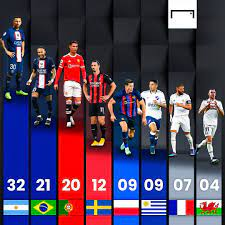

Luka Modric ejecutó a Francia al convertir un tempranero penalti que eliminó a los galos de la posibilidad de alcanzar la fase final de la Liga de las Naciones, un golpe inesperado para los actuales titulares del torneo y campeones del mundo.
Sólo se había llegado al minuto 5 cuando, a la salida de un córner, Konaté pisó el tobillo de Budimir y el árbitro señaló un penalti que, pese a las protestas francesas, fue confirmado por el VAR.
Madrid vs Liverpool

El Real Madrid y el Liverpool son dos de los clubes más legendarios del continente europeo y el mundo entero. Ambos equipos se verán la cara una vez más en la Champions League, como lo hicieron en las finales de la temporada 2017-2018, que tuvo como vencedor al conjunto Merengue a cargo del astro y técnico francés Zinedine Zidane
Mejores jugadas Messi
El video está lleno de momentos deslumbrantes, goles de ensueño, regates mágicos y asistencias que desafían la lógica. Muestra por qué Lionel Messi es considerado uno de los mejores futbolistas de todos los tiempos y un verdadero mago del fútbol. Su destreza, creatividad y pasión por el juego son evidentes en cada jugada.